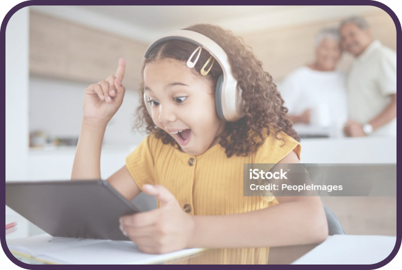

Tecnologia da Educação - EducTech
A Tecnologia da Educação refere-se ao uso de ferramentas e recursos tecnológicos com o objetivo de apoiar e aprimorar o processo de ensino e aprendizagem. Essa abordagem envolve uma ampla gama de recursos, como software educacional, plataformas de e-learning, aplicativos, dispositivos móveis, realidade aumentada, inteligência artificial e muito mais. Esses recursos têm o potencial de transformar a sala de aula tradicional, permitindo que educadores e alunos interajam de maneiras novas e inovadoras. Com a integração dessas tecnologias, é possível personalizar a experiência de aprendizagem, adequando o conteúdo às necessidades e estilos de cada aluno.
DESCUBRA NOSSA IA!
Gere um vídeo a partir de textos:
A tecnologia na educação é importante por criar oportunidades de aprendizagem inovadoras,
acessíveis e personalizadas, transformando o processo educacional
para ser mais dinâmico e adaptado
às
necessidades dos alunos.
Além de facilitar o acesso a recursos educacionais,
a tecnologia
conecta
estudantes e professores,
promovendo colaboração e comunicação.
Acesso à Informação
A tecnologia facilita o acesso rápido e fácil a uma vasta quantidade de informações,
complementando o
conteúdo de aulas e possibilitando a exploração
além dos livros didáticos, tanto para professores
quanto
para alunos.
Aprendizagem Personalizada
Plataformas educacionais adaptativas ajustam o conteúdo
de acordo com o nível de habilidade de cada
estudante, permitindo que eles aprendam no seu próprio ritmo.
Engajamento e Motivação
A tecnologia torna as aulas mais interativas, com o uso de jogos educativos, vídeos e simulações,
aumentando o interesse dos alunos pelo conteúdo.
Desenvolvimento de Habilidades
Ferramentas digitais auxiliam os alunos a desenvolver habilidades essenciais como pensamento crítico,
resolução de problemas e colaboração,
características necessárias no século XXI.
Acessibilidade
A tecnologia remove barreiras geográficas e temporais,
facilitando o acesso à
educação através de
plataformas online,
materiais digitais e soluções adaptadas
para pessoas com deficiências.
Além
disso, o
ensino digital pode ser financeiramente mais acessível.
Desafios
Apesar das vantagens, a tecnologia apresenta desafios como a adaptação de
professores e a
integração
com as metodologias de ensino.
Treinamento contínuo e suporte são fundamentais
para lidar com a
constante
evolução das ferramentas digitais.
Além disso, a resistência à mudança por parte de alguns educadores pode dificultar a implementação
eficaz
das novas tecnologias.

Vantagens
A tecnologia permite automatizar tarefas, otimizar a gestão escolar e
facilitar o acompanhamento do
desempenho de alunos e professores.
Isso melhora a comunicação entre a escola e a comunidade,
além de
preparar os alunos para o mundo digital.
Por fim, a tecnologia educacional é um caminho inevitável para melhorar o
processo de ensino e
aprendizagem, proporcionando benefícios tanto pedagógicos quanto administrativos.